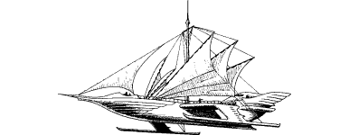

60
Throughout your sky voyage home, your mind is filled with the fear and uncertainty of what may await you in Holmgard. You spend most of the journey on the rear deck, alone with your thoughts, staring down at the land speeding past more than a mile below. You watch as the jungle of the Maakenmire swamp gives way to the barren scrub of the Wildlands. Then, when you catch sight of the Pass of Moytura, your pulse races with excitement for this V-shaped cleft in the southern Durncrags is where the Wildland territories end and your beloved homeland of Sommerlund begins. Yet the excitement you feel here is but nothing compared to your elation when you first glimpse the lights of Holmgard—the Sommlending capital.
{kind=link}

Guided by beacons blazing atop the King’s Citadel, the crew of the Cloud-dancer bring her gently in towards the city. The craft is made to hover directly above the Citadel and hawsers are lowered to anchor her in position against the wind. Then you descend by rope ladder to the Citadel roof where you are greeted by a distinguished party of Barons and Fryearls, led by King Ulnar himself.
‘Welcome home, Grand Master,’ he says, his voice breaking with emotion. Then he clasps you to his chest, like a father welcoming home a lost son. ‘Thank Kai and Ishir you are safe, Lone Wolf,’ he says. ‘Now may the darkness of Naar be lifted from our land.’